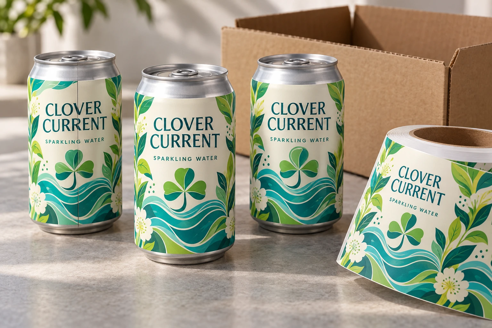

A beverage launch needs a packaging route, not a universal rule that labels are for small orders and printed cans are for large ones. Direct-to-can digital decoration changes that simple comparison, and supplier arrangements differ.
Compare the inventory commitment, SKU allocation and artwork-change exposure in each actual offer. A lower decorated-can price is useful only when the required cans can be filled, stored and used under the agreed program.

AI-generated packaging planning example. Clover Current is a fictional brand. No actual customer job, equipment capability, compatibility test or measured result is depicted.
Include the actual decoration route
Hart Print's official site describes digital direct-to-can printing for small and large batches. That is a supplier-specific example showing why directly printed cans should not all be placed in one high-volume category. It does not establish pricing, availability or terms for this project.
Compare plain cans plus pressure-sensitive labels with the particular direct-decorated offers available to you. Identify conventional and digital decoration where relevant. Sleeves form another possible route and need their own filling, application and receiving review. Do not infer recyclability or process suitability from the decoration name alone.
| Commitment | Plain cans plus labels | Proposed decorated-can route |
|---|---|---|
| Physical can supply | Can specification, available quantity and owner | Same can and filling compatibility confirmed? |
| Artwork-specific inventory | Labels held per SKU | Decorated cans or decoration commitment per SKU |
| Release schedule | Who holds cans/labels and authorizes application? | Who holds decorated stock and authorizes shipment? |
| Change or cancellation | Which remaining label stock becomes unusable? | Which decorated stock or committed work is affected? |
| Packing work | Labeling task, equipment and rejection responsibility | Receiving and filling checks still required |
| Residual stock | Reconcile plain cans and SKU labels separately | Reconcile each SKU's decorated stock |
Compare one order under two demand outcomes
Use the same initial SKU forecast for the actual offers. Then examine a plausible lower-demand or changed-artwork outcome. Record remaining usable inventory and committed obligations; do not invent a probability or expected loss if the business has no basis for it.
Plain cans may remain usable across several SKUs, but that depends on the actual container and filling requirements. Labels can also become obsolete. A decorated-can supplier may offer staged supply or another inventory arrangement; confirm who owns the stock and which costs are incurred if the forecast changes. Avoid assuming that storage at the supplier means no financial commitment.
Keep filling compatibility outside the price shortcut. The co-packer needs to approve the container specification and applicable decorated surface for its own process. A photo of an attractive can does not confirm depalletizing, coding, filling or subsequent handling.
Make the selection conditional when an input is missing
If one route lacks a confirmed pack quantity, freight basis or decoration specification, mark it incomplete rather than declaring it cheaper. Resolve the gap with the relevant supplier. Compare finished, usable packaging for the same product program, not a label-only price against an entire decorated container.
Use stock versus fully printed packaging for the broader supply choice, can-wrap seam planning for wrap geometry and waterproof label sample coverage for wet-use evidence.
Short answer
Choose can labels when you need smaller batches, faster artwork changes, several flavors or market testing. Compare each directly decorated offer on its actual quantity, decoration route and supply terms.
Can labels vs printed cans comparison
| Decision point | Can labels | Printed cans |
|---|---|---|
| Best fit | Small batches, flavor tests, seasonal artwork, market launches and brand updates. | Programs matching the actual decorator's process, quantities and supply terms. |
| Artwork flexibility | Easy to change label artwork by flavor, batch or region. | Artwork-specific cans still need controlled inventory and change planning. |
| MOQ pressure | Can work better for lower quantity custom packaging projects. | Depends on the actual conventional or digital decoration offer. |
| Cold and wet handling | Needs suitable film, adhesive and finish review for condensation. | Container print avoids label edge lift but still depends on can supplier and finish quality. |
| Inventory | Plain cans plus different labels can support multiple SKUs. | Each design may require separate printed can inventory. |
| Brand look | Supports full wrap labels, matte or gloss film, clear windows and short-run changes. | Can look integrated at scale when the design is final. |
Why can labels help early beverage launches
Drink brands often test more than one flavor, caffeine level, serving size, barcode, nutrition layout or market claim. Labels let the buyer keep the can body simple while changing the visual identity on the outside. This is useful for juice, soda, sparkling water, canned coffee, tea, kombucha-style drinks and small RTD beverage lines.
When printed cans may be the better path
Printed cans can make sense when the brand has a stable design, predictable demand and enough volume to manage printed can inventory. The decision is less about which option is universally better and more about whether the packaging program is still changing.
Material choices for beverage can labels
Can labels should be reviewed for wet handling, cold storage and curved metal surfaces. White BOPP is often used when strong color and readable text are important. Clear BOPP can create a more transparent look, but artwork contrast and barcode readability need extra attention. PET film may be considered when added durability is needed.
What to check before ordering can labels
| Field | Requirement to confirm |
|---|---|
| Can size | Confirm diameter, height and label panel area. |
| Label wrap | Decide full wrap, partial wrap, front label or front/back set. |
| Storage | Tell the factory if the cans are refrigerated, iced or exposed to condensation. |
| Application | Confirm hand application, dispenser use or machine labeling. |
Do not ignore label copy and barcode planning
Small beverage brands sometimes focus on front artwork and leave the back panel too late. Before printing, reserve space for barcode, flavor name, lot code area, ingredients, nutrition facts if needed, storage text and any required market-specific wording. The label factory can help with print layout, but the brand is responsible for final regulatory content.
Related guides
For chilled drink material planning, read waterproof beverage labels. To compare film appearance, review clear BOPP vs white BOPP labels. If labels peel during testing, use our peeling label troubleshooting guide.
Send the relevant project details
Discuss the label-based can route with the actual can specification, filling partner's requirements, quantities by SKU, proposed schedule and storage/handling conditions. Identify the unresolved label construction or application question. The form opens an email draft; use listed email or WhatsApp for files. Direct-can supply is not represented as a service confirmed by this website.